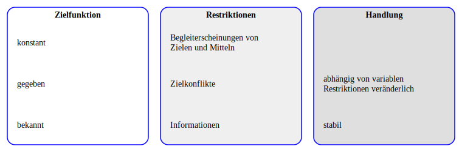

Unter den Bedingungen des vollkommenen Wettbewerbs führen Märzte zu Effizienz
Bedingungen:
vollständige Information
Akteure handeln rational
homogene Güter
keine externen Effekte
keine zeitlichen, örtilichen Präferenzen
Abwesenheit von Marktmacht auf beiden Marktseiten (atomistische Marktstruktur)
unendliche Reaktionsgeschwindigkeit
keine Transaktionskosten
3.1 Effizienzbedingungen Konsumsphäre
Gleiche Grenzraten der Substitution: \[MRS^A_{x_1, x_2}=MRS^B_{x_1, x_2}\]
3.2 Effizienzbedingungen Produktionssphäre
Gleiche Grenzraten der technischen Substitution: \[MRTS^{x_1}_{L, K}=MRTS^{x_2}_{L, K}\]
3.3 Effizienzbedingungen Abstimmung zwischen beiden Sphären
Grenzrate der Subsitution entspricht Grenzrate der Transformation \[MRS^A_{x_1, x_2}=MRS^B_{x_1, x_2}=MRT_{x_1, x_2}\]
3.4 Wirtschaftspsychologische Ergänzung
Nutzenfunktion wird in der Ökonomik \(U=U(x_1, x_2,\dots, x_n)\) wird als gegeben und konstant unterstellt
Aus psychologischer Sicht kann sich die Zusammensetzung der Nutzenfunktion und insbesondere die Gewichtung der Elemente \(x_1, x_2, \dots, x_n\) im Zeitablauf ändern und situationsabhängig sein.
Einzelne Güter kann man sich als Bündel von Produkteigenschaften vorstellen: \(X_j=X_j(x_1, x_2, \dots. x_n)\)
Die subjektive Vorstellung darüber, welche Produkteigenschaften ein einzelnes Gut aufweist und inwiefern diese zur Nutzenfunktion passen, ist abhängig vom subjektiven Informationsstand, von Interpretation und kann auch in der Zeit variieren.
3.4.1 Nutzenmaximierung unter Nebenbedingungen
Code
from graphviz import Digraphfrom IPython.display import displaydot = Digraph()# Layout des gesamten Graphendot.attr(rankdir='LR')# Funktion zur Erstellung eines Clusters mit \l für Linksbündigkeitdef create_cluster(dot, name, label, color, fillcolor, nodes, max_nodes ):with dot.subgraph(name=name) as c: c.attr(label=label, fontname="times-bold", style='filled,rounded', fillcolor=fillcolor, color=color, penwidth='1.5')# Standardknoten mit \l für Linksbündigkeitfor node_id, node_label in nodes:# \n durch \l ersetzen und am Ende \l hinzufügen formatted_label = node_label.replace('\n', '\\l') +'\\l' c.node(node_id, label=formatted_label, width="3", height=".7", shape='none', ) # Schrift6art für bessere Lesbarkeit# Unsichtbare Platzhalterknotenfor i inrange(len(nodes), max_nodes ): c.node(f'{name}_placeholder_{i}', '', style='invis', width="3", height=".7")# Clusterdefinitionen (unverändert)clusters = [ ('cluster_ziel', 'Zielfunktion', 'blue', '#FFFFFF', [ ('a1', 'bekannt'), ('a2', 'gegeben'), ('a3', 'konstant') ]), ('cluster_Restriktion','Restriktionen', 'blue', '#EFEFEF', [ ('b1', 'Informationen'), ('b2', 'Zielkonflikte'), ('b3', 'Begleiterscheinungen von''\n Zielen und Mitteln '),# ('b4', '') ]), ('cluster_Handlung', 'Handlung', 'blue', '#DFDFDF', [ ('c1', 'stabil'), ('c2', 'abhängig von variablen\n''Restriktionen veränderlich') ])]max_nodes =max(len(cluster[4]) for cluster in clusters)# Cluster erstellenfor name, label, color, fillcolor, nodes in clusters: create_cluster(dot, name, label, color, fillcolor, nodes, max_nodes )# Unsichtbare Kanten für vertikale Anordnungdot.edge('a2', 'b2', style='invis' )dot.edge('b2', 'c2', style='invis' )# Ausgabe# display(dot)#Datei erzeugen dot.format='svg'# Format setzendot.render(filename='Nutzenmaximierung', cleanup=True) # Erzeugt output.svg

Schema der rationalen Nutzenmaximierung
3.4.2 SOR-Modell der Wirtschaftspsychologie
Code
from graphviz import Digraphfrom IPython.display import displaydot = Digraph()# Layout des gesamten Graphendot.attr(rankdir='LR')# Funktion zur Erstellung eines Clusters mit \l für Linksbündigkeitdef create_cluster(dot, name, label, color, fillcolor, nodes, max_nodes ):with dot.subgraph(name=name) as c: c.attr(label=label, fontname="times-bold", style='filled,rounded', fillcolor=fillcolor, color=color, penwidth='1.5')# Standardknoten mit \l für Linksbündigkeitfor node_id, node_label in nodes:# \n durch \l ersetzen und am Ende \l hinzufügen formatted_label = node_label.replace('\n', '\\l') +'\\l' c.node(node_id, label=formatted_label, width="3", height=".7", shape='none', ) # Schrift6art für bessere Lesbarkeit# Unsichtbare Platzhalterknotenfor i inrange(len(nodes), max_nodes): c.node(f'{name}_placeholder_{i}', '', style='invis', width="3", height=".7")# Clusterdefinitionen (unverändert)clusters = [ ('cluster_Stimulus', 'Stimulus', 'blue', '#FFFFFF', [ ('a0', ""), ('a01', ""), ('a1', 'Reiz wirkt auf Organismus'), ('a2', '') ]), ('cluster_Organismus','Organismus', 'blue', '#EFEFEF', [ ('b1', 'Verarbeitung'), ('b2', 'Vorwissen'), ('b3', 'Werte'), ('b4', 'aktuelle Situation'), ('b5', '...'), ]), ('cluster_Reaktion', 'Reaktion', 'blue', '#DFDFDF', [ ('c0', ""), ('c1', 'Reaktion auf den Reiz'), ('c2', 'abhängig von Reiz\n''und Situation im Organismus') ])]max_nodes =max(len(cluster[4]) for cluster in clusters)# Cluster erstellenfor name, label, color, fillcolor, nodes in clusters: create_cluster(dot, name, label, color, fillcolor, nodes, max_nodes )# Unsichtbare Kanten für vertikale Anordnungdot.edge('a1', 'b3'#, style='invis' )dot.edge('b3', 'c2'#, style='invis' )# Ausgabedisplay(dot)#Datei erzeugen dot.format='svg'# Format setzendot.render(filename='SOR', cleanup=True) # Erzeugt output.svg